Artwork
The making of a Cosmic Portrait
Every portrait starts on a computer, where I build a whole little world around your pet through digital collage. For a Cosmic Magic portrait I take it further off the screen and into my hands.
I print the finished collage onto A3, then work back over it by hand with gold flakes, glitter, stickers and whatever else feels right for that pet. Once it all comes together I sign it, frame it, and pack it up for its journey to your wall. Here is a look behind the scenes.
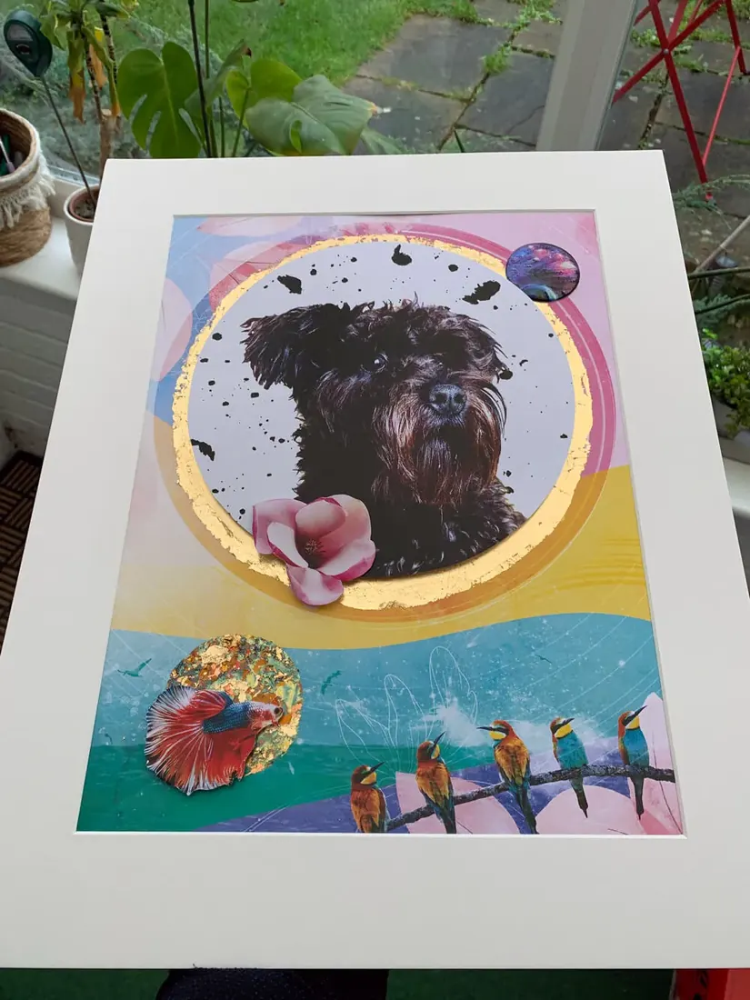
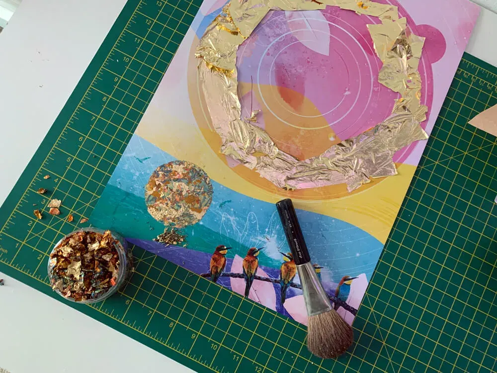
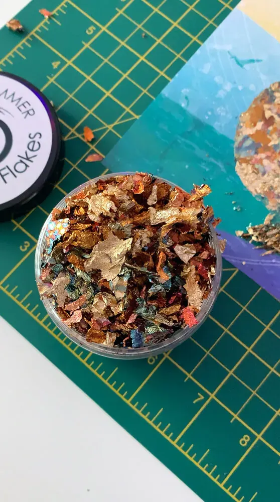
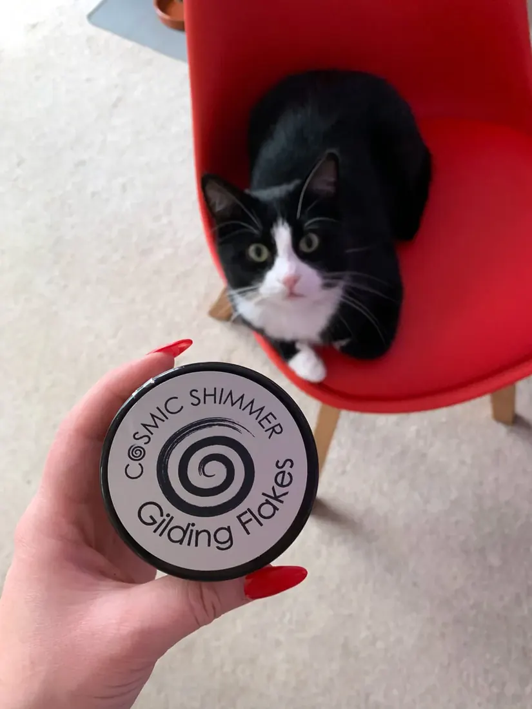
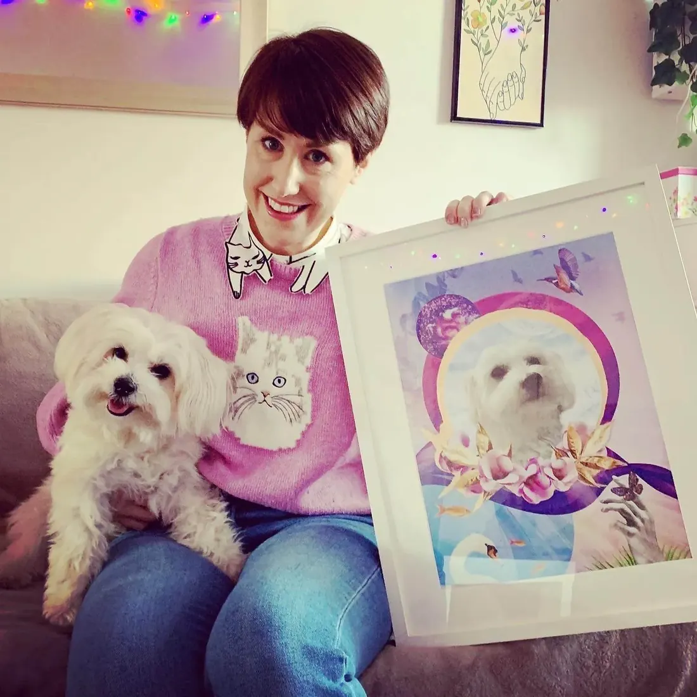
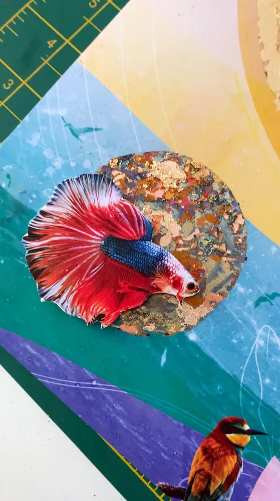
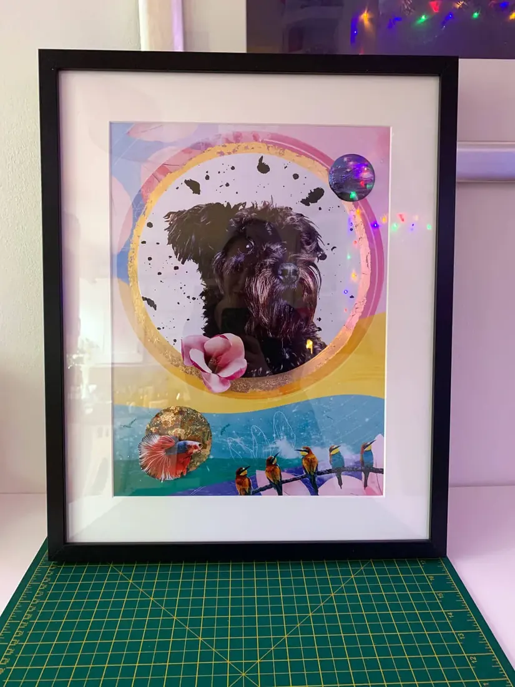
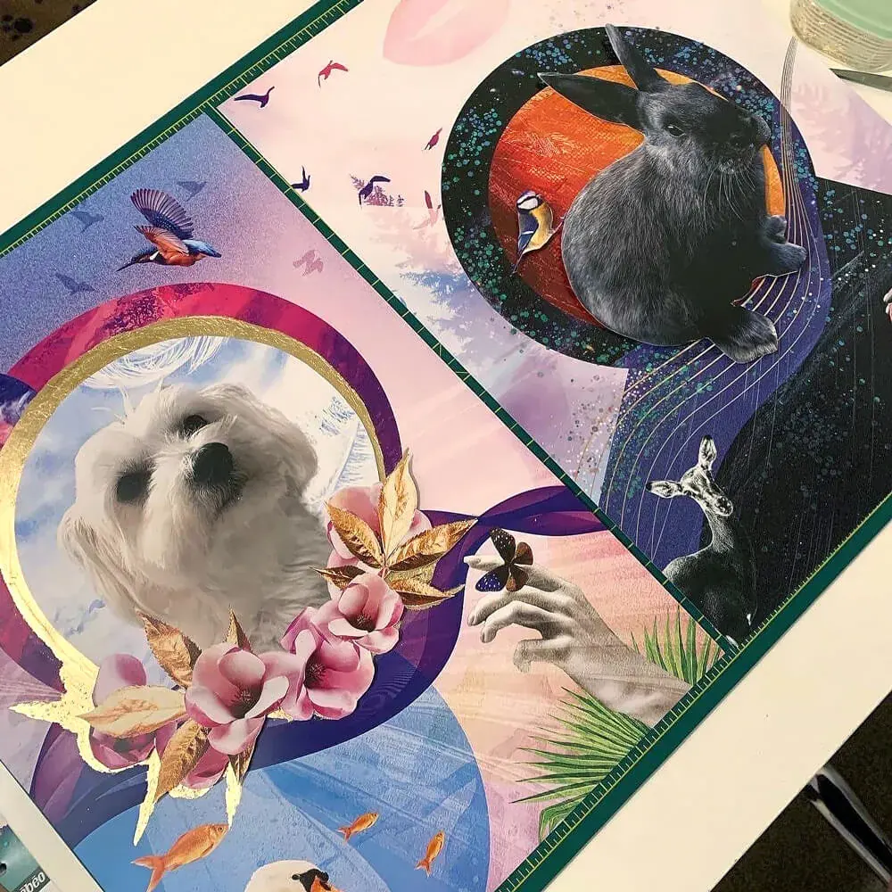
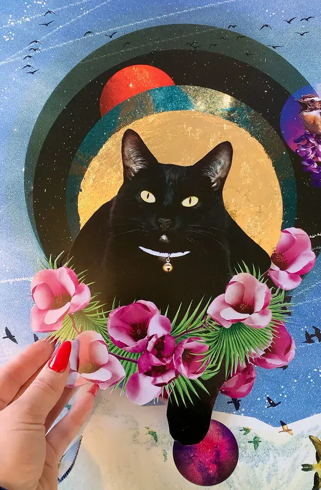
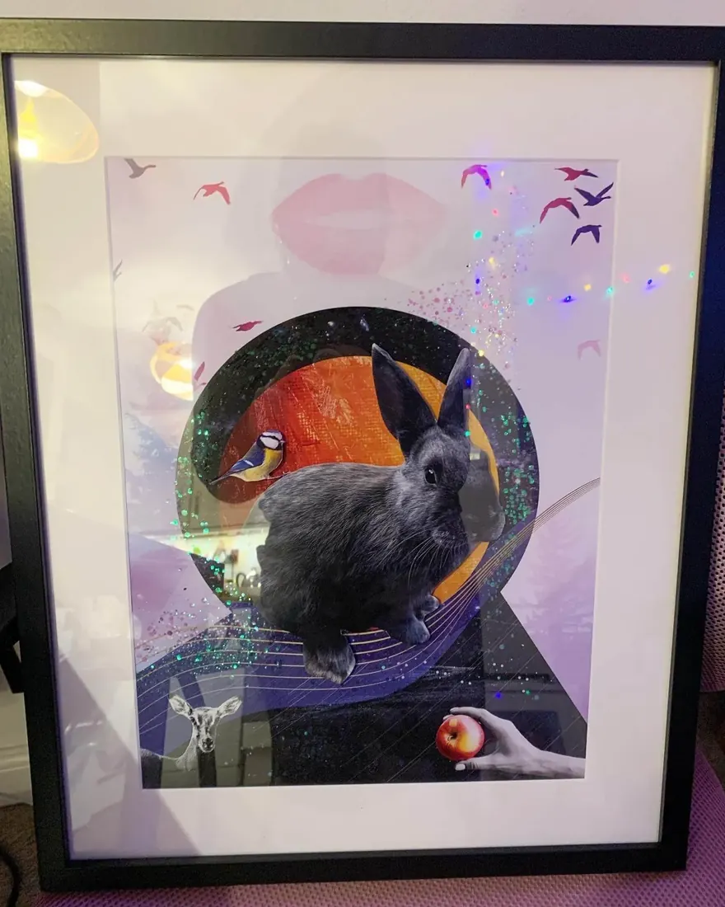
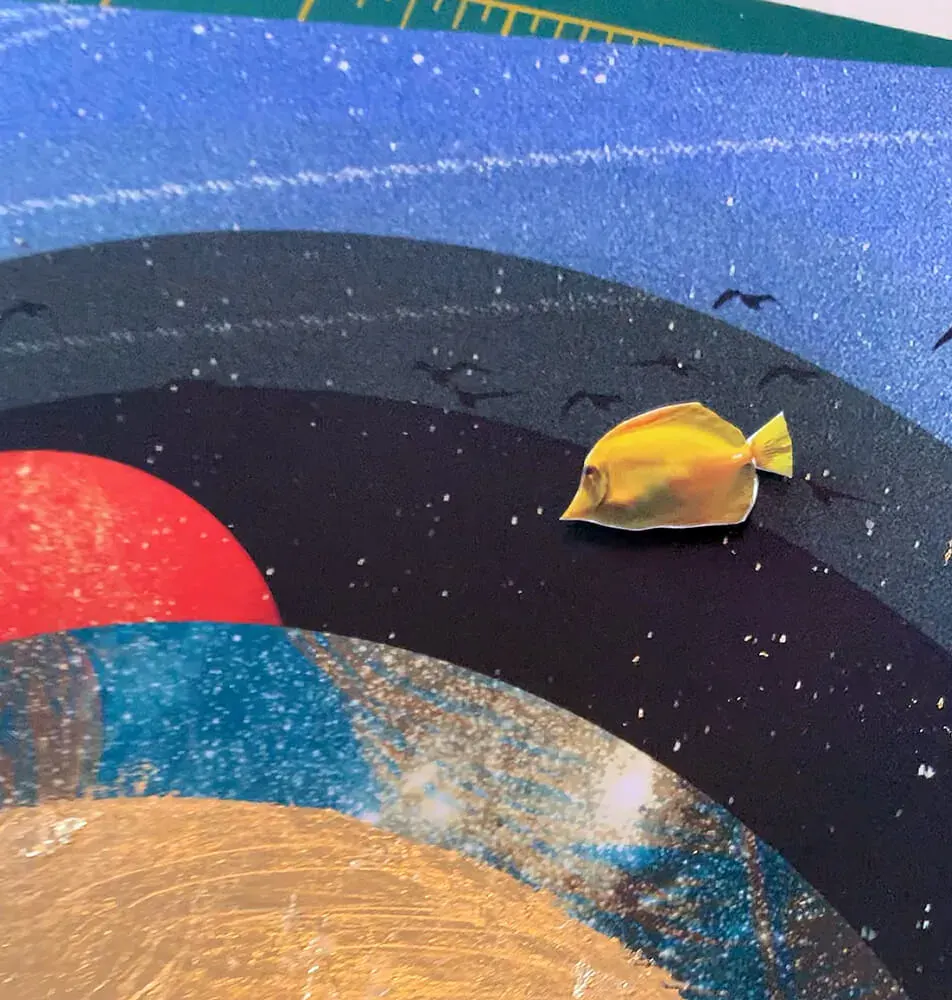
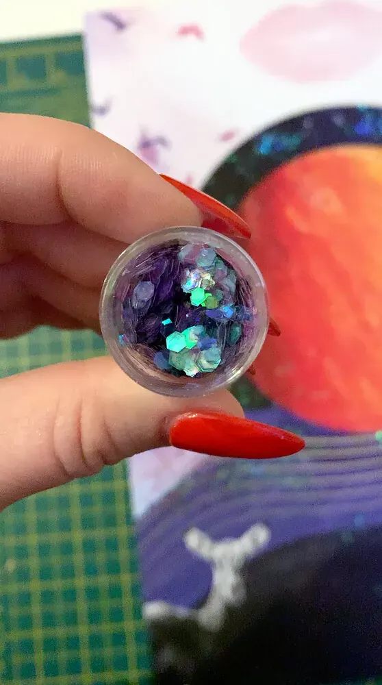
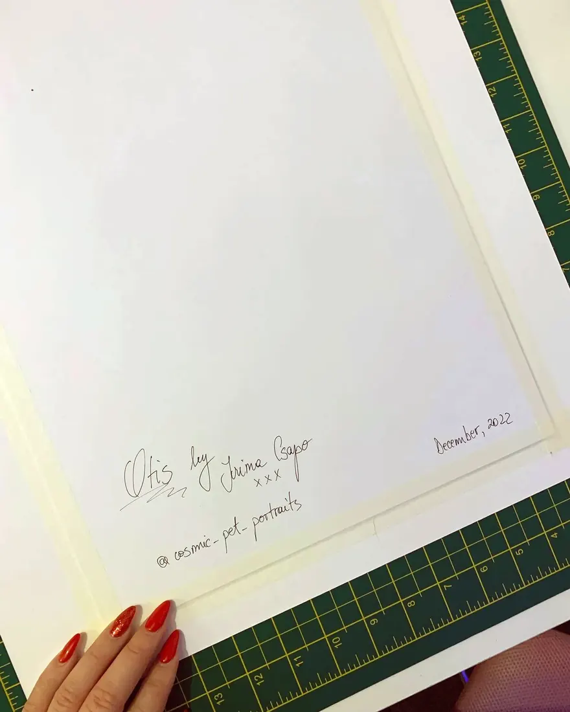
Order a Cosmic Pet Portrait
Impress your loved ones or treat yourself. I would love to hear about your pet.